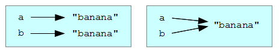
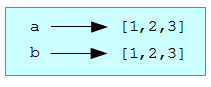
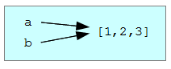
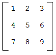

Список (англ.: list) есть упорядоченный набор значений, где каждое значение доступно по индексу. Значения, входящие в список, называются элементами.
Списки похожи на строки, так как строки тоже являются упорядоченными наборами элементов — символов. Но в отличие от строк, элементы списка могут быть любых типов. Списки и строки, а также другие типы, являющиеся упорядоченными наборами, называются последовательностями.
Есть несколько способов создать новый список, простейший из них — заключить элементы в квадратные скобки, [ и ]:
[10, 20, 30, 40]
["spam", "bungee", "swallow"]
В первом примере у нас список из четырех целых чисел. Во втором — список из трех строк. Элементы списка не обязательно относятся к одному типу. Следующий список содержит строку, число с плавающей точкой, целое число и... еще один список:
["hello", 2.0, 5, [10, 20]]
Список внутри другого списка называют вложенным.
Наконец, список может вовсе не содержать элементов. Такой список называют пустым и обозначают [].
В логическом выражении пустой список, так же, как 0 или пустая строка, считается ложью:
>>> if []:
... print 'This is true."...
else:
... print 'This is false."...
This is false.
>>>
Мы можем присваивать списочные значения переменным и передавать списки в качестве аргументов при вызове функций:
>>> vocabulary = ["ameliorate", "castigate", "defenestrate"]
>>> numbers = [17, 123]
>>> empty = []
>>> print vocabulary, numbers, empty
['ameliorate', 'castigate', 'defenestrate'] [17, 123] []
Для доступа к элементам списка используется тот же оператор [], что и для доступа к символам строки. Выражение в квадратных скобках задает индекс. Не забывайте, что индексы начинаются с 0:
>>> print numbers[0]
17
В качестве индекса можно использовать любое целочисленное выражение:
>>> numbers[9-8]
5
>>> numbers[1.0]
Traceback (most recent call last):
File "<stdin>", line 1, in <module>
TypeError: list indices must be integers
Если попытаться получить доступ к несуществующему элементу, то получим ошибку выполнения:
>>> numbers[2]
Traceback (most recent call last):
File "<stdin>", line 1, in <module>
IndexError: list index out of range
Если индекс отрицательный, то счет идет от конца списка:
>>> numbers[-1]
5
>>> numbers[-2]
17
>>> numbers[-3]
Traceback (most recent call last):
File "<stdin>", line 1, in <module>
IndexError: list index out of range
Выражение numbers[-1] дает последний элемент списка, numbers[-2] — второй от конца, а элемента numbers[-3] не существует.
Часто в качестве индекса используется переменная цикла.
horsemen = ["war", "famine", "pestilence", "death"]
i = 0
while i < 4:
print horsemen[i]
i += 1
Этот цикл while считает от 0 до 4. Когда переменная цикла i становится равна 4, условие становится ложным и цикл завершается. Таким образом, тело цикла выполняется для i со значениями 0, 1, 2 и 3.
В каждой итерации переменная i используется как индекс для списка, чтобы вывести i-тый элемент. Этот прием называется обход списка.
Функция len возвращает длину списка, то есть, количество элементов в списке. В качестве верхней границы в цикле удобно использовать возвращаемое этой функцией значение, а не константу. При этом, если размер списка изменится, вам не придется просматривать программу и вносить изменения во все циклы, работающие с этим списком; они будут работать корректно со списком любого размера:
horsemen = ["war", "famine", "pestilence", "death"]
i = 0
num = len(horsemen)
while i < num:
print horsemen[i]
i += 1
В последней итерации i равно len(horsemen) - 1, то есть, индексу последнего элемента списка. Когда i становится равным len(horsemen), условие цикла становится ложным и тело цикла не выполняется. И это правильно, поскольку len(horsemen) недопустимый для данного списка индекс.
Хотя список может содержать другой список, вложенный список считается одним элементом. Длина этого списка равна 4:
['spam!', 1, ['Brie', 'Roquefort', 'Pol le Veq'], [1, 2, 3]]
Оператор in проверяет вхождение элемента в последовательность и дает в результате логическое значение. Мы уже использовали его со строками, но он также работает со списками и другими последовательностями:
>>> horsemen = ['war', 'famine', 'pestilence', 'death']
>>> 'pestilence' in horsemen
True
>>> 'debauchery' in horsemen
False
Поскольку ‘pestilence’ входит в список horsemen, то оператор in возвращает True. Поскольку ‘debauchery’ не входит в список, in возвращает False.
Используя not вместе с in, можно проверить, что элемент не является элементом списка:
>>> 'debauchery' not in horsemen
True
Оператор + конкатенирует списки:
>>> a = [1, 2, 3]
>>> b = [4, 5, 6]
>>> c = a + b
>>> print c
[1, 2, 3, 4, 5, 6]
Оператор * повторяет элементы списка заданное число раз:
>>> [0] * 4
[0, 0, 0, 0]
>>> [1, 2, 3] * 3
[1, 2, 3, 1, 2, 3, 1, 2, 3]
В первом примере 0 повторяется четыре раза. Во втором три раза повторяются элементы 1, 2, 3.
Мы выполняли срезы строк, но срезы также работают для списков:
>>> a_list = ['a', 'b', 'c', 'd', 'e', 'f']
>>> a_list[1:3]
['b', 'c']
>>> a_list[:4]
['a', 'b', 'c', 'd']
>>> a_list[3:]
['d', 'e', 'f']
>>> a_list[:]
['a', 'b', 'c', 'd', 'e', 'f']
В программировании часто требуются списки последовательных целых чисел, и Python предоставляет простой способ для их создания:
>>> range(1, 5)
[1, 2, 3, 4]
Функция range принимает два аргумента и возвращает список целых, начиная от числа, заданного первым аргументом, и до числа, заданного вторым аргументом, не включая последнее.
Можно вызывать range и по-другому. При вызове с единственным аргументом функция возвращает список, начинающийся с 0:
>>> range(10)
[0, 1, 2, 3, 4, 5, 6, 7, 8, 9]
Третий аргумент, если он указан, задает шаг между соседними значениями в списке. Получим список чисел от 1 до 10 с шагом 2:
>>> range(1, 10, 2)
[1, 3, 5, 7, 9]
Если шаг задан отрицательным числом, то начальное число должно быть больше конечного:
>>> range(20, 4, -5)
[20, 15, 10, 5]
Иначе результатом будет пустой список:
>>> range(10, 20, -5)
[]
В отличие от строк, списки изменяемы. Это означает, мы можем изменять их элементы. Используя оператор [] в левой части присваивания, можно избирательно обновить один из элементов:
>>> fruit = ["banana", "apple", "quince"]
>>> fruit[0] = "pear"
>>> fruit[-1] = "orange"
>>> print fruit
['pear', 'apple', 'orange']
Оператор [] может использоваться со списком в любом месте выражения. Если он появляется слева от оператора присваивания, он изменяет элемент списка. В приведенном примере первый элемент списка fruit изменяется с 'banana' на 'pear', а последний — с 'quince' на 'orange'. Присваивание отдельному элементу не работает для строк:
>>> my_string = 'TEST'
>>> my_string[2] = 'X'
Traceback (most recent call last):
File "<stdin>", line 1, in <module>
TypeError: 'str' object does not support item assignment
Но работает для списков:
>>> my_list = ['T', 'E', 'S', 'T']
>>> my_list[2] = 'X'
>>> my_list
['T', 'E', 'X', 'T']
Используя срез, можно изменить несколько элементов сразу:
>>> a_list = ['a', 'b', 'c', 'd', 'e', 'f']
>>> a_list[1:3] = ['x', 'y']
>>> print a_list
['a', 'x', 'y', 'd', 'e', 'f']
Можно также удалить элементы из списка, присвоив им пустой список:
>>> a_list = ['a', 'b', 'c', 'd', 'e', 'f']
>>> a_list[1:3] = []
>>> print a_list
['a', 'd', 'e', 'f']
А можно добавить элементы в список, втиснув их в пустой срез в нужном месте:
>>> a_list = ['a', 'd', 'f']
>>> a_list[1:1] = ['b', 'c']
>>> print a_list
['a', 'b', 'c', 'd', 'f']
>>> a_list[4:4] = ['e']
>>> print a_list
['a', 'b', 'c', 'd', 'e', 'f']
Удаление элементов с помощью присваивания срезов довольно вычурно, и потому чревато ошибками. Python предлагает альтернативный способ, более легкий для чтения и понимания, и, к тому же, более универсальный.
del удаляет элемент из списка:
>>> a = ['one', 'two', 'three']
>>> del a[1]
>>> a
['one', 'three']
Как и следовало ожидать, del работает с отрицательными индексами, и генерирует ошибку выполнения, если заданный индекс выходит за границы разрешенного диапазона.
С del можно использовать срез:
>>> a_list = ['a', 'b', 'c', 'd', 'e', 'f']
>>> del a_list[1:5]
>>> print a_list
['a', 'f']
Выполним предложения присваивания:
a = "banana"
b = "banana"
Теперь мы знаем, что и a и b указывают на строку "banana". Но мы не можем сказать, указывают ли они на одну и ту же строку.
Есть два варианта:
В первом случае a и b указывают на два разных объекта с одинаковыми значениями. Во втором случае они ссылаются на один и тот же объект. Объект — это что-то, с чем может быть связано имя переменной.
У каждого объекта имеется уникальный идентификатор, который можно получить с помощью функции id. Отобразив идентификаторы объектов, на которые указывают a и b, мы узнаем, связаны ли эти переменные с одним и тем же объектом:
>>> id(a)
135044008
>>> id(b)
135044008
Мы два раза получили один и тот же идентификатор, а это значит, что Python создал только одну строку, и обе переменные, a и b, связаны с ней. Вы, вероятно, получите другое значение идентификатора.
Интересно, что списки ведут себя иначе. Если создать два списка, то мы получим два объекта:
>>> a = [1, 2, 3]
>>> b = [1, 2, 3]
>>> id(a)
135045528
>>> id(b)
135041704
На диаграмме это выглядит так:
Переменные a и b ссылаются на разные объекты, имеющие одинаковые значения.
Поскольку переменные ссылаются на объекты, то, если мы присвоим одну переменную другой, обе переменные будут ссылаться на один и тот же объект:
>>> a = [1, 2, 3]
>>> b = a
>>> id(a) == id(b)
True
На диаграмме это выглядит так:
Поскольку два разных имени, a и b, связаны с одним и тем же списком, будем называть их альтернативными именами. Изменения, сделанные с использованием одного имени, оказывают влияние и на другое:
>>> b[0] = 5
>>> print a
[5, 2, 3]
Хотя такое поведение может быть полезным, иногда оно оказывается нежелательным. Вообще говоря, лучше избегать альтернативных имен, работая с изменяемыми объектами. А вот для неизменяемых объектов альтернативные имена не представляют никаких проблем. Поэтому Python создает альтернативные имена для строк, когда представляется случай сэкономить память компьютера.
Если нужно изменить список и при этом сохранить копию оригинального списка, то понадобится сделать копию самого списка, а не ссылки на него. Этот процесс иногда называют клонированием.
Простейший способ клонировать список — воспользоваться оператором среза:
>>> a = [1, 2, 3]
>>> b = a[:]
>>> print b
[1, 2, 3]
Получение любого среза списка a приводит к созданию нового списка. В данном случае срез включает весь список.
Теперь можно изменять список b, не беспокоясь об a:
>>> b[0] = 5
>>> print a
[1, 2, 3]
Цикл for также работает со списками. Синтаксис такой:
for <переменная> in <список>:
<тело>
Это предложение эквивалентно следующему фрагменту кода:
i = 0
while i < len(<список>):
<переменная> = <список>[i]
<тело>
i += 1
Цикл for более лаконичен, поскольку мы можем обойтись без переменной цикла i. Вот рассмотренный выше цикл, переписанный с помощью for.
for horseman in horsemen:
print horseman
Он читается почти по-английски: для (каждого) horseman (англ.: всадник) в (списке) horsemen (англ.: всадники) напечатать horseman.
Любое списочное выражение может быть использовано в цикле for:
for number in range(20):
if number % 3 == 0:
print number
for fruit in ["banana", "apple", "quince"]:
print "I like to eat " + fruit + "s!"
В первом примере выводятся все числа, кратные 3, между 0 и 19. Во втором примере выражается энтузиазм по поводу разных видов фруктов.
Поскольку списки изменяемы, часто выполняется обход списка с изменением каждого из его элементов. Следующий пример возводит в квадрат все числа в списке от 1 до 5:
numbers = [1, 2, 3, 4, 5]
for index in range(len(numbers)):
numbers[index] = numbers[index]**2
Подумайте над выражением range(len(numbers)) и разберитесь, как оно работает. В данном случае нам нужно как значение, так и индекс элемента списка для того, чтобы мы могли присвоить ему новое значение.
Такой прием довольно распространен в программировании, поэтому Python предлагает более красивый способ реализовать его:
numbers = [1, 2, 3, 4, 5]
for index, value in enumerate(numbers):
numbers[index] = value**2
Здесь функция enumerate в каждой итерации возвращает очередной индекс и связанное с ним значение. Еще один пример того, как работает enumerate:
>>> for index, value in enumerate(['banana', 'apple', 'pear', 'quince']):
... print index, value
...
0 banana
1 apple
2 pear
3 quince
>>>
При передаче списка в качестве аргумента передается ссылка на список, а не его копия. А поскольку списки изменяемы, то изменение параметра внутри функции означает также и изменение аргумента. Например, функция ниже принимает список в качестве аргумента и умножает каждый элемент списка на 2:
def double_stuff(a_list):
for index, value in enumerate(a_list):
a_list[index] = 2 * value
Если поместить функцию double_stuff в файл ch08.py, то сможем так протестировать ее:
>>> from ch08 import double_stuff
>>> things = [2, 5, 'Spam', 9.5]
>>> double_stuff(things)
>>> things
[4, 10, 'SpamSpam', 19.0]
>>>
Параметр a_list и переменная things являются альтернативными именами одного и того же объекта.
Если функция модифицирует списочный параметр, изменения будут видны в вызывающем коде.
Функции, которые принимают списки как аргументы и изменяют эти списки в ходе выполнения, называются модифицирующими, а изменения, которые они делают, называются побочным эффектом.
Чистая функция не производит побочных эффектов. Все ее связи с вызывающей программой сводятся к параметрам, которых она не изменяет, и возвращаемому значению. Вот чистая функция double_stuff:
def double_stuff(a_list):
new_list = []
for value in a_list:
new_list += [2 * value]
return new_list
Эта версия double_stuff не изменяет своих аргументов:
>>> from ch08 import double_stuff
>>> things = [2, 5, 'Spam', 9.5]
>>> double_stuff(things)
[4, 10, 'SpamSpam', 19.0]
>>> things
[2, 5, 'Spam', 9.5]
>>>
При использовании чистой функции double_stuff, для изменения things вам понадобится присвоить возвращаемое значение things:
>>> things = double_stuff(things)
>>> things
[4, 10, 'SpamSpam', 19.0]
>>>
Все, что можно сделать с помощью модифицирующих функций, может быть сделано и при помощи чистых функций. На самом деле, некоторые языки программирования поддерживают только чистые функции. Есть мнение, что программы, использующие только чистые функции, быстрее разрабатывать и в них закрадывается меньше ошибок. И все же, иногда модифицирующие функции удобны, а в отдельных случаях программы с чистыми функциями менее эффективны.
Вообще, мы рекомендуем писать чистые функции всегда, когда это разумно, и прибегать к модифицирующим только в случаях, когда их использование дает несомненное преимущество.
Вложенный список — это список, являющийся элементом другого списка. В следующем списке элемент с индексом 3 есть вложенный список:
>>> nested = ["hello", 2.0, 5, [10, 20]]
Если ввести nested[3], то получим [10, 20]. Извлечь элемент из вложенного списка можно за два шага:
>>> elem = nested[3]
>>> elem[0]
10
А можно объединить эти два шага в выражение:
>>> nested[3][1]
20
Оператор квадратная скобка вычисляется слева направо, так что это выражение берет 3-й элемент списка nested и извлекает из него 1-ый элемент.
Вложенные списки часто используют для того, чтобы представлять матрицы. Например, матрицу
можно представить так:
>>> matrix = [[1, 2, 3], [4, 5, 6], [7, 8, 9]]
matrix есть список из трех элементов, в котором каждый элемент задает строку матрицы. Можно получить целую строку матрицы, как обычно:
>>> matrix[1]
[4, 5, 6]
Также можно извлечь отдельный элемент матрицы, используя два индекса:
>>> matrix[1][1]
5
Первый индекс выбирает строку, а второй — столбец. Хотя этот способ представления матриц самый распространенный, он не является единственным. Его вариацией является список столбцов вместо списка строк. Позднее мы увидим более радикальную альтернативу, использующую словарь.
Разработка через тестирование (англ.: Test-driven development, TDD) — это практика разработки программ, в которой программа создается серией небольших итераций, в каждой из которых сначала пишутся автоматические тесты, а затем код, реализующий тестируемую функциональность. От итерации к итерации растет реализованная и оттестированная функциональность.
Продемонстрируем разработку через тестирование с помощью доктестов. Скажем, нам нужна функция, которая создает матрицу с rows строк и columns столбцов, принимая аргументы для rows и columns.
Сначала подготовим тест для этой функции в файле matrices.py:
def make_matrix(rows, columns):
"""
>>> make_matrix(3, 5)
[[0, 0, 0, 0, 0], [0, 0, 0, 0, 0], [0, 0, 0, 0, 0]]
"""
if __name__ == '__main__':
import doctest
doctest.testmod()
Выполнив скрипт, видим, что тест не прошел:
**********************************************************************
File "matrices.py", line 3, in __main__.make_matrix
Failed example:
make_matrix(3, 5)
Expected:
[[0, 0, 0, 0, 0], [0, 0, 0, 0, 0], [0, 0, 0, 0, 0]]
Got nothing
**********************************************************************
1 items had failures:
1 of 1 in __main__.make_matrix
***Test Failed*** 1 failures.
Тест не проходит, поскольку тело функции не содержит ничего, кроме строки в тройных кавычках, и поэтому возвращает None. Наш тест требует, чтобы функция возвращала матрицу 3 x 5, заполненную нулями.
Правила разработки через тестирование говорят, что для начала нужно написать самый простой вариант, который бы удовлетворял тест. Так что, в этом случае, просто вернем ожидаемый результат:
def make_matrix(rows, columns):
"""
>>> make_matrix(3, 5)
[[0, 0, 0, 0, 0], [0, 0, 0, 0, 0], [0, 0, 0, 0, 0]]
"""
return [[0, 0, 0, 0, 0], [0, 0, 0, 0, 0], [0, 0, 0, 0, 0]]
Теперь при выполнении скрипта тест успешно проходит, но наша реализация make_matrix всегда возвращает один и тот же результат, а это явно не то, что имелось в виду. В качестве мотивации дальнейших улучшений добавим тест:
def make_matrix(rows, columns):
"""
>>> make_matrix(3, 5)
[[0, 0, 0, 0, 0], [0, 0, 0, 0, 0], [0, 0, 0, 0, 0]]
>>> make_matrix(4, 2)
[[0, 0], [0, 0], [0, 0], [0, 0]]
"""
return [[0, 0, 0, 0, 0], [0, 0, 0, 0, 0], [0, 0, 0, 0, 0]]
Как и следовало ожидать, тест не проходит:
**********************************************************************
File "matrices.py", line 5, in __main__.make_matrix
Failed example:
make_matrix(4, 2)
Expected:
[[0, 0], [0, 0], [0, 0], [0, 0]]
Got:
[[0, 0, 0, 0, 0], [0, 0, 0, 0, 0], [0, 0, 0, 0, 0]]
**********************************************************************
1 items had failures:
1 of 2 in __main__.make_matrix
***Test Failed*** 1 failures.
Этот процесс называется разработкой через тестирование, потому что код пишется только тогда, когда имеется тест, который не проходит. Мотивированные последним тестом, теперь напишем более общее решение:
def make_matrix(rows, columns):
"""
>>> make_matrix(3, 5)
[[0, 0, 0, 0, 0], [0, 0, 0, 0, 0], [0, 0, 0, 0, 0]]
>>> make_matrix(4, 2)
[[0, 0], [0, 0], [0, 0], [0, 0]]
"""
return [[0] * columns] * rows
Это решение, похоже, работает, поскольку тесты проходят. Однако, начав пользоваться новой функцией, быстро обнаружим баг:
>>> from matrices import *
>>> m = make_matrix(4, 3)
>>> m
[[0, 0, 0], [0, 0, 0], [0, 0, 0], [0, 0, 0]]
>>> m[1][2] = 7
>>> m
[[0, 0, 7], [0, 0, 7], [0, 0, 7], [0, 0, 7]]
>>>
Мы хотели присвоить значение 7 элементу во второй строке и третьем столбце, но, вместо этого, значение 7 получили все элементы третьего столбца!
По размышлении становится ясно, что в нашем текущем решении каждая строка матрицы — всего лишь ссылка на один и тот же список. Это определенно не то, что нам нужно. Приступая к исправлению бага, сначала напишем тест, демонстрирующий наличие этого бага:
def make_matrix(rows, columns):
"""
>>> make_matrix(3, 5)
[[0, 0, 0, 0, 0], [0, 0, 0, 0, 0], [0, 0, 0, 0, 0]]
>>> make_matrix(4, 2)
[[0, 0], [0, 0], [0, 0], [0, 0]]
>>> m = make_matrix(4, 2)
>>> m[1][1] = 7
>>> m
[[0, 0], [0, 7], [0, 0], [0, 0]]
"""
return [[0] * columns] * rows
Теперь, имея тест, который демонстрирует баг в программе, мы должны найти лучшее решение:
def make_matrix(rows, columns):
"""
>>> make_matrix(3, 5)
[[0, 0, 0, 0, 0], [0, 0, 0, 0, 0], [0, 0, 0, 0, 0]]
>>> make_matrix(4, 2)
[[0, 0], [0, 0], [0, 0], [0, 0]]
>>> m = make_matrix(4, 2)
>>> m[1][1] = 7
>>> m
[[0, 0], [0, 7], [0, 0], [0, 0]]
"""
matrix = []
for row in range(rows):
matrix += [[0] * columns]
return matrix
Процесс разработки через тестирование имеет ряд преимуществ. Этот процесс:
В Python есть функция list, которая принимает значение некоторой последовательности как аргумент и создает список из ее элементов.
>>> list("Crunchy Frog")
['C', 'r', 'u', 'n', 'c', 'h', 'y', ' ', 'F', 'r', 'o', 'g']
Также существует функция str, которая берет любое значение Python как аргумент и возвращает его строковое представление.
>>> str(5)
'5'
>>> str(None)
'None'
>>> str(list("nope"))
"['n', 'o', 'p', 'e']"
Как видно из последнего примера, с помощью str не удается соединить вместе элементы списка символов. Это можно сделать с помощью функции join из модуля string:
>>> import string
>>> char_list = list("Frog")
>>> char_list
['F', 'r', 'o', 'g']
>>> string.join(char_list, '')
'Frog'
Две очень полезные функции модуля string имеют дело со списками строк. Функция split разбивает строку на слова, возвращая список слов. По умолчанию считается, что слова отделяются друг от друга одним или более пробельными символами:
>>> import string
>>> song = "The rain in Spain..."
>>> string.split(song)
['The', 'rain', 'in', 'Spain...']
Необязательный аргумент позволяет указать, какие символы считать разделителями слов. В следующем примере в качестве разделителя указана последовательность двух символов ai:
>>> string.split(song, 'ai')
['The r', 'n in Sp', 'n...']
Заметьте, что ai не попадает в список.
Функция string.join делает обратное функции string.split. Она принимает два аргумента: список строк и разделитель, который будет разделять элементы списка в результирующей строке.
>>> import string
>>> words = ['crunchy', 'raw', 'unboned', 'real', 'dead', 'frog']
>>> string.join(words, ' ')
'crunchy raw unboned real dead frog'
>>> string.join(words, '**')
'crunchy**raw**unboned**real**dead**frog'
Напишите цикл, который обходит список
['spam!', 1, ['Brie', 'Roquefort', 'Pol le Veq'], [1, 2, 3]]
и выводит длину каждого элемента. Что происходит, когда вы передаете целое число функции len? Замените 1 на 'one' и выполните вашу программу снова.
Создайте файл ch08e02.py следующего содержания:
# Add your doctests here:
"""
"""
# Write your Python code here:
if __name__ == '__main__':
import doctest
doctest.testmod()
Добавляйте следующие наборы доктестов в докстроку в начале файла и пишите код Python, который обеспечит прохождение доктестов. Добавляйте по одному набору доктестов за один раз.
"""
>>> a_list[3]
42
>>> a_list[6]
'Ni!'
>>> len(a_list)
8
"""
"""
>>> b_list[1:]
['Stills', 'Nash']
>>> group = b_list + c_list
>>> group[-1]
'Young'
"""
"""
>>> 'war' in mystery_list
False
>>> 'peace' in mystery_list
True
>>> 'justice' in mystery_list
True
>>> 'oppression' in mystery_list
False
>>> 'equality' in mystery_list
True
"""
"""
>>> range(a, b, c)
[5, 9, 13, 17]
"""
Не добавляйте новый набор доктестов до тех пор, пока все предыдущие не будут проходить успешно.
Что скажет интерпретатор Python на следующее предложение?
>>> range(10, 0, -2)
Три аргумента функции range — это start, stop и step, соответственно. В этом примере start больше, чем stop. А что произойдет, если start < stop и step < 0? Сформулируйте правило о том, как соотносятся start, stop и step.
a = [1, 2, 3]
b = a[:]
b[0] = 5
Нарисуйте диаграмму для a и b до и после выполнения третьей строки.
Что выведет следующая программа?
this = ['I', 'am', 'not', 'a', 'crook']
that = ['I', 'am', 'not', 'a', 'crook']
print "Test 1: %s" % (id(this) == id(that))
that = this
print "Test 2: %s" % (id(this) == id(that))
Подробно объясните результаты.
Создайте файл ch08e06.py и, следуя процедуре, описанной в упражнении 2, добейтесь прохождения следующих доктестов:
"""
>>> 13 in junk
True
>>> del junk[4]
>>> junk
[3, 7, 9, 10, 17, 21, 24, 27]
>>> del junk[a:b]
>>> junk
[3, 7, 27]
"""
"""
>>> nlist[2][1]
0
>>> nlist[0][2]
17
>>> nlist[1][1]
5
"""
"""
>>> import string
>>> string.split(message, '??')
['this', 'and', 'that']
"""
Напишите функцию add_lists(a, b), которая берет два списка чисел одинаковой длины и возвращает новый список с суммами соответствующих элементов этих списков.
def add_lists(a, b):
"""
>>> add_lists([1, 1], [1, 1])
[2, 2]
>>> add_lists([1, 2], [1, 4])
[2, 6]
>>> add_lists([1, 2, 1], [1, 4, 3])
[2, 6, 4]
"""
Приведенные тесты для add_lists должны успешно пройти.
Напишите функцию mult_lists(a, b), которая берет два списка чисел одинаковой длины и возвращает сумму произведений соответствующих элементов этих списков.
def mult_lists(a, b):
"""
>>> mult_lists([1, 1], [1, 1])
2
>>> mult_lists([1, 2], [1, 4])
9
>>> mult_lists([1, 2, 1], [1, 4, 3])
12
"""
Убедитесь, что приведенные доктесты для mult_lists проходит успешно.
Добавьте следующие две функции в файл matrices.py, созданный в разделе о разработке через тестирование:
def add_row(matrix):
"""
>>> m = [[0, 0], [0, 0]]
>>> add_row(m)
[[0, 0], [0, 0], [0, 0]]
>>> n = [[3, 2, 5], [1, 4, 7]]
>>> add_row(n)
[[3, 2, 5], [1, 4, 7], [0, 0, 0]]
>>> n
[[3, 2, 5], [1, 4, 7]]
"""
def add_column(matrix):
"""
>>> m = [[0, 0], [0, 0]]
>>> add_column(m)
[[0, 0, 0], [0, 0, 0]]
>>> n = [[3, 2], [5, 1], [4, 7]]
>>> add_column(n)
[[3, 2, 0], [5, 1, 0], [4, 7, 0]]
>>> n
[[3, 2], [5, 1], [4, 7]]
"""
Ваши новые функции должны пройти доктесты. Заметьте, что последний из доктестов для каждой функции проверяет, что add_row и add_column являются чистыми функциями.
Подсказка:* в Python имеется модуль copy с функцией deepcopy, которая может облегчить вам задачу. Мы подробнее поговорим о deepcopy позднее, но, если хотите попробовать эту функцию сейчас, погуглите python copy module.
Напишите функцию add_matrices(m1, m2), которая складывает m1 и m2 и возвращает новую матрицу, содержащую их сумму. Мы сделаем допущение, что m1 и m2 одинакового размера, и будем складывать матрицы, складывая соответствующие их значения.
def add_matrices(m1, m2):
"""
>>> a = [[1, 2], [3, 4]]
>>> b = [[2, 2], [2, 2]]
>>> add_matrices(a, b)
[[3, 4], [5, 6]]
>>> c = [[8, 2], [3, 4], [5, 7]]
>>> d = [[3, 2], [9, 2], [10, 12]]
>>> add_matrices(c, d)
[[11, 4], [12, 6], [15, 19]]
>>> c
[[8, 2], [3, 4], [5, 7]]
>>> d
[[3, 2], [9, 2], [10, 12]]
"""
Добавьте эту новую функцию в matrices.py и убедитесь, что она проходит приведенные выше тесты. Два последних доктеста проверяют, что add_matrices является чистой функцией.
Напишите функцию scalar_mult(n, m), которая умножает матрицу m на число n. Убедитесь, что ваша функция проходит приведенные доктесты:
def scalar_mult(n, m):
"""
>>> a = [[1, 2], [3, 4]]
>>> scalar_mult(3, a)
[[3, 6], [9, 12]]
>>> b = [[3, 5, 7], [1, 1, 1], [0, 2, 0], [2, 2, 3]]
>>> scalar_mult(10, b)
[[30, 50, 70], [10, 10, 10], [0, 20, 0], [20, 20, 30]]
>>> b
[[3, 5, 7], [1, 1, 1], [0, 2, 0], [2, 2, 3]]
"""
Добавьте новые функции в matrices.py, удовлетворяющие приведенным доктестам:
def row_times_column(m1, row, m2, column):
"""
>>> row_times_column([[1, 2], [3, 4]], 0, [[5, 6], [7, 8]], 0)
19
>>> row_times_column([[1, 2], [3, 4]], 0, [[5, 6], [7, 8]], 1)
22
>>> row_times_column([[1, 2], [3, 4]], 1, [[5, 6], [7, 8]], 0)
43
>>> row_times_column([[1, 2], [3, 4]], 1, [[5, 6], [7, 8]], 1)
50
"""
def matrix_mult(m1, m2):
"""
>>> matrix_mult([[1, 2], [3, 4]], [[5, 6], [7, 8]])
[[19, 22], [43, 50]]
>>> matrix_mult([[1, 2, 3], [4, 5, 6]], [[7, 8], [9, 1], [2, 3]])
[[31, 19], [85, 55]]
>>> matrix_mult([[7, 8], [9, 1], [2, 3]], [[1, 2, 3], [4, 5, 6]])
[[39, 54, 69], [13, 23, 33], [14, 19, 24]]
"""
В режиме интерпретатора Python введите:
>>> import string
>>> song = "The rain in Spain..."
>>> string.join(string.split(song))
Опишите, как соотносятся string.join(string.split(song)) и song. Верно ли это соотношение для любых строк? В каком случае строки получатся разные?
Напишите функцию replace(s, old, new), которая заменяет все вхождения old на new в строке s.
def replace(s, old, new):
"""
>>> replace('Mississippi', 'i', 'I')
'MIssIssIppI'
>>> s = 'I love spom! Spom is my favorite food. Spom, spom, spom, yum!'
>>> replace(s, 'om', 'am')
'I love spam! Spam is my favorite food. Spam, spam, spam, yum!'
>>> replace(s, 'o', 'a')
'I lave spam! Spam is my favarite faad. Spam, spam, spam, yum!'
"""
Ваша программа должна удовлетворять приведенным доктестам. Подсказка: воспользуйтесь string.split и string.join.